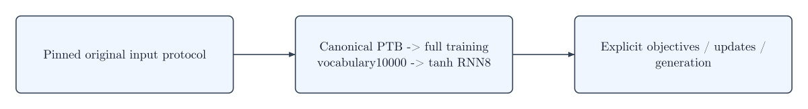
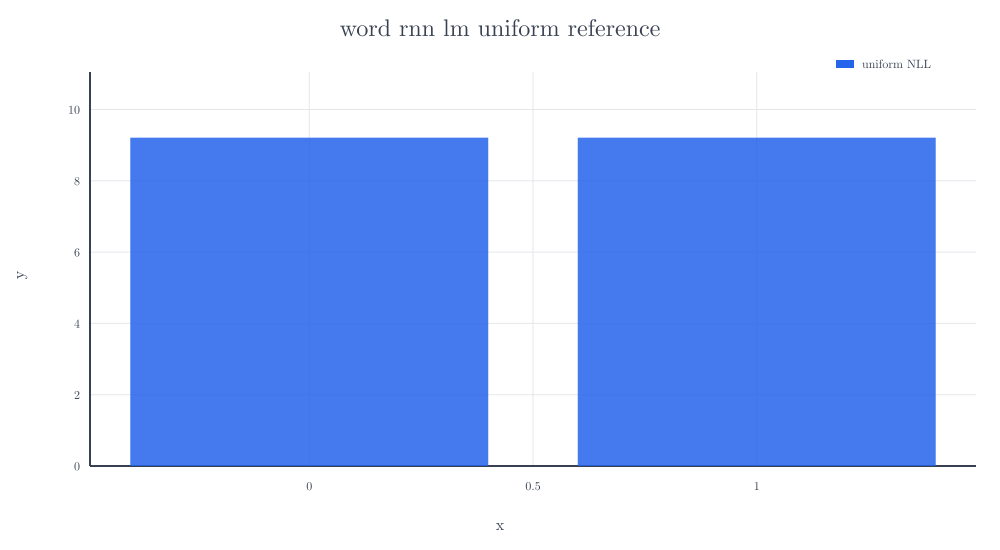
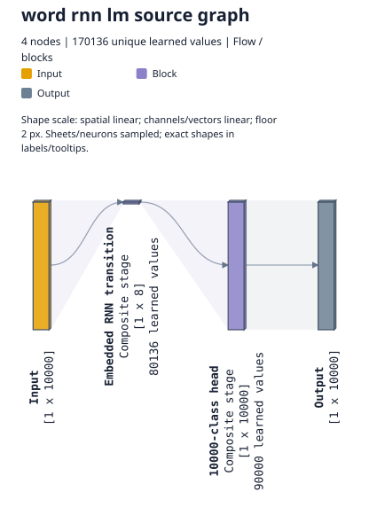
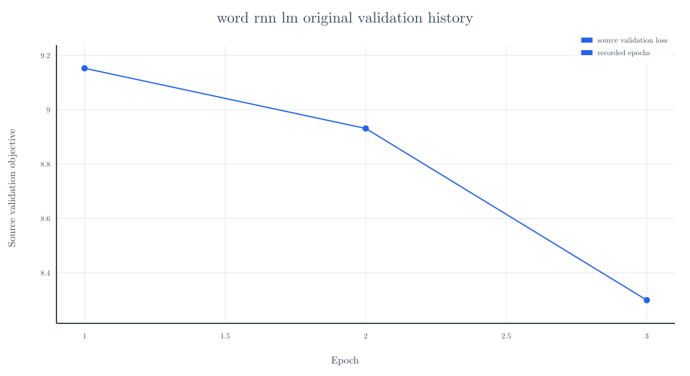

Word Language Modelling: Fit-Only PTB Vocabulary and Full-Softmax Recurrence
Abstract
The exact upstream preparation protocol and the complete editable native C++ experiment preserve original source rows, seeds, fitting budgets and validation. Canonical components expose mathematical graphs; every objective, optimizer step, fitting/generation loop and deployment comparison remains visible.
Follow the actual data and model
Canonical PTB -> full training vocabulary10000 -> tanh RNN8.
#include <dm/dm.hpp>
int main(){std::filesystem::create_directories("build");dm::graphics::Diagram d(29,1200);dm::graphics::DiagramNodeStyle s;s.width=14;s.height=5;s.font_size=23;d.node("source",{-18,0},"Pinned original input protocol",s).node("graph",{0,0},"Canonical PTB -> full training vocabulary10000 -> tanh RNN8",s).node("report",{18,0},"Explicit objectives / updates / generation",s).edge("source","graph").edge("graph","report").save_svg("build/word_rnn_lm_method.svg");}
Prepare the original inputs through datamunge
The native adapter follows the recovered upstream preparation script, including source checksums, source row identities, fitting-only vocabulary/palette selection and held-out boundaries. Runtime preparation calls no Python or another checkout. Native byte-valued image arrays are stored as Int32 with identical numeric values. Optional external TensorFlow recordings are separate; their absence does not establish external parity.
#include <dm/dm.hpp>
int main(){auto path=dm::datasets::prepare_example_data("ptb_word");std::print("Prepared original ptb_word protocol at {}\n",path);}Prepared original ptb_word protocol at /home/jordan/.cache/datamunge/datasets/ptb_word
A hand-checkable likelihood reference
A uniform categorical distribution over10000 classes gives negative log-likelihood log(10000). For language/image models this is nats per predicted token; for a sequence tagger it is a single independent-token reference, not its CRF sequence likelihood.
#include <dm/dm.hpp>
int main(){auto logp=dm::nn::log_softmax(dm::nn::zeros({1,10000}),1);double computed=-logp.to_vector<double>()[0];std::print("| classes | native uniform NLL | analytic NLL |\n|---:|---:|---:|\n| 10000 | {:.9f} | {:.9f} |\n",computed,std::log(10000.));dm::graphics::RPlot::create().bars(std::vector<double>{0,1},std::vector<double>{computed,std::log(10000.)},"uniform NLL",{37,99,235}).ylim(0,std::log(10000.)*1.2).title("word rnn lm uniform reference").size(1000,550).save_svg("build/word_rnn_lm_worked.svg");}| classes | native uniform NLL | analytic NLL |
|---|---|---|
| 10000 | 9.210340500 | 9.210340372 |

Inspect the native graph
The preview groups actual native graph endpoints into named stages, using independent source-sized parameters. It shows one recurrent transition; the complete training program retains the original full sequence unroll. Cache/filter/generation loops and CRF decoding remain explicit in the program below.
#include <dm/dm.hpp>
int main(){namespace n=dm::nn;namespace m=n::models;std::filesystem::create_directories("build");n::ParameterStore p(0);n::Module network([&](const n::Tensor&x){m::word_lm::Parameters(p);auto y=m::word_lm::Step(p,x,n::zeros({1,8}));n::model_stage("Embedded RNN transition",x,y.hidden);return n::model_stage("10000-class head",y.hidden,y.logits);},"word rnn lm source graph");n::ModelPlotOptions options;options.detail=n::ModelPlotDetail::Blocks;options.sizing.minimum_extent=2;options.sizing.max_planes=2;network.plot(n::zeros({1,10000}),options).save_svg("build/word_rnn_lm_network.svg");}
Complete preserved source experiment
Original epoch/batch budgets, random streams, source guard tests and weak outcomes are preserved. All fitting and generation code is editable. This program uses native C++ data preparation and mathematical components; it does not execute the upstream Python preparers. Saved arrays and source stdout will be compared against a frozen copy of the pre-conversion program on the exact same prepared inputs. No external-framework equivalence is inferred when recordings are absent.
#include <dm/dm.hpp>
// CMD: just run-nn word_rnn_lm
// Actual word-level Elman language model on pinned PTB, full training-only
// vocabulary and three cheap epochs.
//
// Port of tflow's word_rnn_lm. Data: tflow's output/datasets/ptb_word
// (ptb_word.npz: Penn Treebank word ids, 128 fit / 32 validation / 32 test
// disjoint 16-word next-token windows; vocabulary.txt: the 10000-word
// training-only vocabulary, <unk> = 0, newlines -> <eos>; written by tflow's
// scripts/fetch_datasets.py). Model (common/word_rnn_lm.hpp): 8-D one-hot
// embedding, 8 tanh recurrent units from a zero state per window, full
// 10000-way softmax; mean next-word NLL, Adam .003, batch 8, three epochs (48
// updates); 170136 parameters. A tiny teaching subset, not the PTB benchmark.
// The port first replays tflow's recorded run (output/models/word_rnn_lm,
// skipped if absent) from TF's initial weights: initial test outputs, the
// first-batch forward and gradients, weights after the first update, the
// validation history and every epoch's weights; from TF's final weights it
// reproduces TF's test outputs, final gradients, the streaming/Jacobian probe
// (state_parity.npz), the future-word control and all four seeded samples
// (identical word codes). The own run then checks restore, stateful
// one-word steps against the full unroll, exactly-zero future input partials,
// future words not changing earlier logits (bitwise), invalid-id rejection,
// bit-exact repeat sampling, the fit-window unigram/bigram baselines and
// immutability. Checkpoints are .npz (final.npz).
// Options: epochs=3 data=PATH (the ptb_word dataset) out=PATH tf=PATH (tflow's
// output/models/word_rnn_lm). Output: output/nn/models/word_rnn_lm/ (index.html, samples,
// metrics.json ...).
// Editable workflow support: word_rnn_lm.hpp
// Elman word-level language model with shared full-sequence and one-step
// parameters (port of tflow's common/nn/word_rnn_lm.h and the model of
// common/ml/word_rnn_lm.h): one-hot words [.., 10000] x "embedding/W"
// [10000, 8] ~ N(0, .1^2), an 8-unit tanh RNN "recurrent" (Wx ~ N(0, .1^2),
// Wh ~ N(0, .15^2), b = 0) from a zero state, a 10000-way "output" dense
// (W ~ N(0, .1^2), b = 0); 170136 parameters in 6 tensors. Teacher sequences
// are 16 tokens.
// Editable workflow support: checks.hpp
// Small runtime checks used by the executable nn examples. They stay on in
// Release builds and make the example exit nonzero on failure, so `just
// run-all-nn` doubles as a regression test against the recorded TF numbers.
// Editable workflow support: runtime.hpp
// Bounded demonstrations by default; opt into convergence experiments explicitly.
namespace example_runtime {
inline bool Full() {
const char* value = std::getenv("DATAMUNGE_EXAMPLES_FULL");
return value && std::string(value) == "1";
}
template <typename T> T Limit(T requested, T quick_limit) {
return Full() ? requested : std::min(requested, quick_limit);
}
inline void Describe() {
if (!Full())
std::cout << "Quick demonstration: bounded training; convergence metrics require "
"DATAMUNGE_EXAMPLES_FULL=1.\n";
}
} // namespace example_runtime
namespace check {
inline void Require(bool condition, const std::string& message) {
if (!condition) throw std::runtime_error(message);
}
// A short demonstration checks execution, derivatives and persistence; reaching
// a published accuracy/return requires the separately requested full schedule.
inline void TrainingQuality(bool condition, const std::string& message) {
if (example_runtime::Full()) Require(condition, message);
else std::cout << " full-training quality check deferred: " << message << '\n';
}
inline void Near(double actual, double expected, double tolerance, const std::string& message) {
if (!std::isfinite(actual) || !std::isfinite(expected) || std::abs(actual - expected) > tolerance)
throw std::runtime_error(message + ": got " + std::to_string(actual) + ", expected " + std::to_string(expected));
}
/// Expects `f` to throw; returns the message.
template <typename F>
std::string Throws(F&& f, const std::string& message) {
try {
f();
} catch (const std::exception& e) {
return e.what();
}
throw std::runtime_error(message + ": expected an exception");
}
} // namespace check
inline void Header(const std::string& title) {
const std::size_t pad = title.size() < 60 ? 60 - title.size() : 0;
std::cout << "\n== " << title << " " << std::string(pad, '=') << "\n";
}
namespace word_lm {
namespace nn = datamunge::nn;
using nn::Tensor;
using namespace dm::nn::models::word_lm;
/// Mean next-word NLL over every position.
inline Tensor Loss(const Tensor& logits, const Tensor& target) {
const Tensor labels = nn::one_hot(nn::reshape(target, {-1}), kVocab);
return nn::neg(nn::mean(nn::sum(nn::mul(labels, nn::log_softmax(nn::reshape(logits, {-1, kVocab}), -1)), {1})));
}
} // namespace word_lm
// Editable workflow support: paths.hpp
// Where the nn example ports read datasets and write their outputs.
//
// Datasets: $DATAMUNGE_DATA_DIR, or the user's cache. Public datasets are
// prepared by the example data loaders when first needed.
// Outputs (checkpoints, histories, fixtures): $DATAMUNGE_OUTPUT_DIR, or
// output/nn relative to the working directory (`just run-nn` runs from the
// repository root). Both are created on demand by the caller.
// Editable workflow support: dataset_assets.hpp
namespace dataset_assets{inline std::string DataRoot(){return dm::datasets::data_home();}}
namespace paths {
inline std::filesystem::path DataRoot() {
return dataset_assets::DataRoot();
}
/// DataRoot() / name, e.g. Dataset("mnist").
inline std::filesystem::path Dataset(const std::string& name) { return DataRoot() / name; }
inline std::filesystem::path OutputRoot(){return std::filesystem::absolute("build/recovered-language");}
/// OutputRoot() / relative, created as a directory.
inline std::filesystem::path OutputDir(const std::string& relative) {
auto dir = OutputRoot() / relative;
std::filesystem::create_directories(dir);
return dir;
}
} // namespace paths
// Editable workflow support: tf_replay.hpp
// Small helpers the 4.2 sequence-task ports share for working with tflow's
// recorded runs: named-array maps (tflow's `std::map<std::string, tf::Tensor>`
// batches), row selection, exact/approximate comparisons, loading TF's
// initial_arrays.npz into a ParameterStore and reading history.tsv columns.
//
// A tflow run directory (tflow's output/models/<name>) holds initial_arrays.npz,
// first_batch.npz, initial_gradients.npz, history.tsv and model_arrays.npz.
// Replaying the run from TF's own initial weights with the same batch order
// (nn::BatchOrder reproduces tflow's) and the same optimizer checks the port
// numerically, independently of the random initialisation.
namespace replay {
namespace nn = datamunge::nn;
using nn::Tensor;
using Map = std::map<std::string, Tensor>;
/// tflow's recorded output directory for an example (its output/models/<name>).
inline std::filesystem::path TfModels(const std::string& name) {
return paths::DataRoot().parent_path() / "models" / name;
}
inline Tensor Get(const nn::NamedTensors& arrays, const std::string& key) {
for (const auto& [name, t] : arrays)
if (name == key) return t;
throw std::runtime_error("missing array " + key);
}
inline Map ToMap(const nn::NamedTensors& arrays) { return {arrays.begin(), arrays.end()}; }
inline nn::NamedTensors ToNamed(const Map& m) { return {m.begin(), m.end()}; }
/// Rows `rows` (axis 0) of every array.
inline Map Rows(const Map& m, const std::vector<std::int64_t>& rows) {
Map out;
for (const auto& [k, v] : m) out[k] = nn::take_rows(v, rows);
return out;
}
/// {key: arrays["<split>_<key>"]} for each key.
inline Map Split(const nn::NamedTensors& arrays, const std::string& split, const std::vector<std::string>& keys) {
Map out;
for (const auto& k : keys) out[k] = Get(arrays, split + "_" + k);
return out;
}
inline double MaxAbsDiff(const Tensor& a, const Tensor& b) {
const auto x = a.to_vector<double>(), y = b.to_vector<double>();
check::Require(x.size() == y.size(), "compared tensors have the same size");
double m = 0;
for (std::size_t i = 0; i < x.size(); ++i) m = std::max(m, std::abs(x[i] - y[i]));
return m;
}
/// Bit-identical values (dtype and shape included).
inline bool SameBits(const Tensor& a, const Tensor& b) {
if (a.dtype() != b.dtype() || a.shape() != b.shape()) return false;
auto same = [](const auto& x, const auto& y) {
return x.size() == y.size() && (x.empty() || std::memcmp(x.data(), y.data(), x.size() * sizeof(x[0])) == 0);
};
switch (a.dtype()) {
case nn::DType::Float32: return same(a.to_vector<float>(), b.to_vector<float>());
case nn::DType::Float64: return same(a.to_vector<double>(), b.to_vector<double>());
case nn::DType::Int32: return same(a.to_vector<std::int32_t>(), b.to_vector<std::int32_t>());
default: return same(a.to_vector<std::int64_t>(), b.to_vector<std::int64_t>());
}
}
inline bool SameBits(const Map& a, const Map& b) {
if (a.size() != b.size()) return false;
for (const auto& [k, v] : a)
if (!b.count(k) || !SameBits(v, b.at(k))) return false;
return true;
}
/// Copies of every parameter, by name.
inline Map Arrays(const nn::ParameterStore& p) {
Map out;
for (const auto& name : p.names()) out[name] = p.at(name).detach().clone();
return out;
}
/// Gradients aligned with p.names(), by name.
inline Map Named(const nn::ParameterStore& p, const std::vector<Tensor>& g) {
Map out;
for (std::size_t i = 0; i < g.size(); ++i) out[p.names()[i]] = g[i].defined() ? g[i].detach() : nn::zeros_like(p.parameters()[i]).detach();
return out;
}
/// Overwrites every parameter of `p` from an .npz (e.g. TF's initial_arrays.npz),
/// which must hold exactly p's names.
inline void LoadInto(nn::ParameterStore& p, const std::filesystem::path& file) {
const auto arrays = nn::load_npz(file.string());
check::Require(arrays.size() == p.size(), "array file covers exactly the model's parameters: " + file.string());
for (const auto& [name, value] : arrays) {
check::Require(p.contains(name), "array " + name + " is a model parameter");
p.set(name, nn::cast(value, p.at(name).dtype()));
}
}
/// max |a[k] - b[k]| over the keys of `a` (all must exist in `b`).
inline double MaxDiff(const Map& a, const Map& b) {
double m = 0;
for (const auto& [k, v] : a) {
check::Require(b.count(k) > 0, "reference has array " + k);
m = std::max(m, MaxAbsDiff(v, b.at(k)));
}
return m;
}
inline double MaxDiff(const Map& a, const std::filesystem::path& file) { return MaxDiff(a, ToMap(nn::load_npz(file.string()))); }
/// Column `column` (0-based) of a tab-separated history file with a header line.
inline std::vector<double> History(const std::filesystem::path& file, int column = 1) {
std::ifstream in(file);
std::string line;
std::vector<double> out;
std::getline(in, line);
while (std::getline(in, line)) {
std::stringstream ss(line);
std::string cell;
for (int c = 0; c <= column && std::getline(ss, cell, '\t'); ++c)
if (c == column) out.push_back(std::stod(cell));
}
return out;
}
inline nn::OptimizerConfig Adam() {
nn::OptimizerConfig c;
c.kind = nn::OptimizerKind::Adam;
return c;
}
/// Copies `files` from `from` to `to` when present.
inline void CopyAssets(const std::filesystem::path& from, const std::filesystem::path& to,
const std::vector<std::string>& files) {
for (const auto& f : files)
if (std::filesystem::exists(from / f))
std::filesystem::copy_file(from / f, to / f, std::filesystem::copy_options::overwrite_existing);
}
} // namespace replay
namespace nn = datamunge::nn;
using nn::Tensor;
using replay::Map;
using namespace word_lm;
namespace {
std::vector<std::string> Vocabulary(const std::filesystem::path& path) {
std::ifstream file(path);
std::vector<std::string> words;
std::string word;
while (std::getline(file, word))
words.push_back(word);
check::Require(
words.size() == 10000 && words[0] == "<unk>", "fullTrainingOnlyPTB10000WordVocabulary");
return words;
}
std::string Decode(const Tensor& codes, const std::vector<std::string>& words) {
std::string out;
const auto c = codes.to_vector<int>();
for (std::size_t i = 0; i < c.size(); ++i) {
if (i)
out += ' ';
out += words.at(c[i]);
}
return out;
}
struct Model {
nn::ParameterStore p;
explicit Model(std::uint64_t seed) : p(seed) {
Parameters(p);
check::Require(
p.count() == 170136 && p.size() == 6, "170136WordEmbeddingRecurrentSoftmaxParameters");
}
Map Evaluate(const Tensor& x, const Tensor& y) {
nn::NoGradGuard guard;
const Path path = Sequence(p, nn::one_hot(x, kVocab));
const Map out{{"logits", path.logits}, {"hidden", path.hidden}, {"loss", Loss(path.logits, y)}};
for (const auto& [k, v] : out)
for (float f : v.to_vector<float>())
check::Require(std::isfinite(f), "finitewordLMfields");
return out;
}
std::vector<Tensor> Gradients(const Tensor& x, const Tensor& y) {
return nn::grad(Loss(Sequence(p, nn::one_hot(x, kVocab)).logits, y), p.parameters());
}
/// One observed word and the state only.
std::pair<Tensor, Tensor> StepOnce(const Tensor& token, const Tensor& state) {
check::Require(
token.dtype() == nn::DType::Int32 && token.dim() == 1 &&
state.shape() == nn::Shape{token.shape()[0], kUnits},
"validsingle-wordstatebatch");
for (int t : token.to_vector<int>())
check::Require(t >= 0 && t < kVocab, "validwordID");
nn::NoGradGuard guard;
const auto s = Step(p, nn::one_hot(token, kVocab), state);
return {s.logits, s.hidden};
}
/// d sum_b logits[b, 8, 0] / d encoded input [B, 16, 10000].
Tensor InputGradient(const Tensor& x) {
Tensor encoded = nn::one_hot(x, kVocab);
encoded.requires_grad_(true);
const Path path = Sequence(p, encoded);
return nn::grad(nn::sum(nn::select(nn::select(path.logits, 1, 8), 1, 0)), {encoded})[0];
}
Map Sample(const std::vector<int>& prompt, int count, std::uint32_t seed, double temperature) {
check::Require(
!prompt.empty() && count > 0 && temperature > 0 && std::isfinite(temperature),
"validwordprompt/count/temperature");
Tensor state = nn::zeros({1, kUnits});
std::vector<std::int32_t> codes(prompt.begin(), prompt.end());
std::vector<double> uniform(count);
std::vector<float> scores(std::size_t(count) * kVocab), states(count * kUnits);
std::pair<Tensor, Tensor> output;
for (int w : prompt) {
output = StepOnce(nn::from_vector(std::vector<std::int32_t>{w}), state);
state = output.second;
}
std::mt19937 rng(seed);
for (int t = 0; t < count; ++t) {
const double u = (double(rng()) + .5) / 4294967296.;
uniform[t] = u;
const auto lg = output.first.to_vector<float>();
double maximum = -INFINITY, mass = 0;
for (int c = 0; c < kVocab; ++c) {
scores[std::size_t(t) * kVocab + c] = lg[c];
maximum = std::max(maximum, double(lg[c]) / temperature);
}
const auto sv = state.to_vector<float>();
for (int j = 0; j < kUnits; ++j)
states[t * kUnits + j] = sv[j];
for (int c = 0; c < kVocab; ++c)
mass += std::exp(double(lg[c]) / temperature - maximum);
double cumulative = 0;
int chosen = kVocab - 1;
for (int c = 0; c < kVocab; ++c) {
cumulative += std::exp(double(lg[c]) / temperature - maximum) / mass;
if (u < cumulative) {
chosen = c;
break;
}
}
codes.push_back(chosen);
output = StepOnce(nn::from_vector(std::vector<std::int32_t>{chosen}), state);
state = output.second;
}
return {
{"codes", nn::from_vector(codes)},
{"uniform", nn::from_vector(uniform)},
{"logits", nn::from_vector(scores, {count, kVocab})},
{"states", nn::from_vector(states, {count, kUnits})}};
}
};
std::vector<std::vector<int>> Prompts(const Tensor& single, const std::vector<std::string>& words) {
std::vector<int> eos;
for (int i = 0; i < kVocab; ++i)
if (words[i] == "<eos>")
eos.push_back(i);
check::Require(eos.size() == 1, "knownTrainingEOSPrompt");
const auto s = single.to_vector<int>();
return {eos, {s[0], s[1]}, {s[0], s[1]}, {s[0], s[1]}};
}
constexpr double kTemperatures[4] = {1, 1, .8, 1.2};
void TfParity(
const std::filesystem::path& tf,
const Map& data,
const std::vector<std::string>& words,
int epochs) {
if (!std::filesystem::exists(tf / "initial_arrays.npz")) {
std::cout << "(tflow run not found at " << tf << "; TF parity skipped)\n";
return;
}
Model m(0);
replay::LoadInto(m.p, tf / "initial_arrays.npz");
const double out = replay::MaxDiff(
m.Evaluate(data.at("test_input"), data.at("test_target")), tf / "initial_outputs.npz");
const auto fb = replay::ToMap(nn::load_npz((tf / "first_batch.npz").string()));
const double fwd =
replay::MaxDiff(m.Evaluate(fb.at("input"), fb.at("target")), tf / "first_forward.npz");
const double gd = replay::MaxDiff(
replay::Named(m.p, m.Gradients(fb.at("input"), fb.at("target"))),
tf / "initial_gradients.npz");
check::Near(std::max(out, fwd), 0, 2e-6, "initial test outputs and first-batch forward match TF");
check::Near(gd, 0, 2e-6, "first-batch parameter gradients match TF");
const auto tfh = replay::History(tf / "history.tsv");
double after = -1, worst = 0, epoch_w = 0;
nn::Optimizer opt(m.p, .003, replay::Adam());
nn::BatchOrder order(128, 8, 42019);
int updates = 0;
for (int epoch = 1; epoch <= epochs; ++epoch) {
order.begin_epoch();
for (;;) {
const auto rows = order.next();
if (rows.empty())
break;
const Tensor x = nn::take_rows(data.at("fit_input"), rows),
y = nn::take_rows(data.at("fit_target"), rows);
const auto path = Sequence(m.p, nn::one_hot(x, kVocab));
const auto loss = Loss(path.logits, y);
const auto gradients = nn::grad(loss, m.p.parameters());
opt.step(gradients);
if (!updates) {
after = replay::MaxDiff(replay::Arrays(m.p), tf / "first_after.npz");
}
++updates;
}
const Map valid = m.Evaluate(data.at("validation_input"), data.at("validation_target"));
const double nll = valid.at("loss").item<double>();
std::cout << " replay epoch" << epoch << " validationNLL=" << nll << " (TF "
<< tfh.at(epoch - 1) << ")\n";
worst = std::max(worst, std::abs(nll - tfh.at(epoch - 1)));
const auto file = tf / ("epoch" + std::to_string(epoch) + "_arrays.npz");
if (std::filesystem::exists(file))
epoch_w = std::max(epoch_w, replay::MaxDiff(replay::Arrays(m.p), file));
}
std::cout << "TF parity from TF's initial weights: initial outputs max diff=" << out
<< ", first forward max diff=" << fwd << ", gradients max diff=" << gd
<< ", weights after first update max diff=" << after << ", history max diff=" << worst
<< ", epoch weights max diff=" << epoch_w << "\n";
check::Near(after, 0, 1e-4, "weights after the first Adam update match TF");
check::Near(worst, 0, 1e-4, "validation history tracks TF's recorded run");
check::Near(epoch_w, 0, 1e-3, "every epoch's weights track TF's");
Model f(0);
replay::LoadInto(f.p, tf / "model_arrays.npz");
const double fo = replay::MaxDiff(
f.Evaluate(data.at("test_input"), data.at("test_target")), tf / "outputs.npz");
const double fg = replay::MaxDiff(
replay::Named(f.p, f.Gradients(fb.at("input"), fb.at("target"))), tf / "final_gradients.npz");
const Map sp = replay::ToMap(nn::load_npz((tf / "state_parity.npz").string()));
const double ig = replay::MaxAbsDiff(f.InputGradient(sp.at("input")), sp.at("input_gradient"));
Tensor state = nn::zeros({1, kUnits});
double steps = 0;
const auto in = sp.at("input").to_vector<std::int32_t>();
for (int t = 0; t < kSteps; ++t) {
const auto s = f.StepOnce(nn::from_vector(std::vector<std::int32_t>{in[t]}), state);
state = s.second;
steps = std::max(
{steps,
replay::MaxAbsDiff(s.first, nn::select(sp.at("step_logits"), 1, t)),
replay::MaxAbsDiff(s.second, nn::select(sp.at("step_states"), 1, t))});
}
const Map fc = replay::ToMap(nn::load_npz((tf / "future_control.npz").string()));
const Tensor tgt = nn::take_rows(data.at("test_target"), {0});
const double fut =
replay::MaxAbsDiff(f.Evaluate(fc.at("input"), tgt).at("logits"), fc.at("logits"));
const auto prompts = Prompts(sp.at("input"), words);
int same = 0;
double sample = 0;
for (int i = 0; i < 4; ++i) {
const Map s = f.Sample(prompts[i], 64, 42029, kTemperatures[i]);
const Map r =
replay::ToMap(nn::load_npz((tf / ("sample" + std::to_string(i) + ".npz")).string()));
same += replay::SameBits(s.at("codes"), r.at("codes"));
sample = std::max(sample, replay::MaxDiff(s, r));
}
std::cout << "from TF's final weights: test outputs max diff=" << fo
<< ", final gradients max diff=" << fg << ", step logits/states max diff=" << steps
<< ", input Jacobian max diff=" << ig << ", future control max diff=" << fut
<< ", samples with identical codes " << same << "/4 (values max diff=" << sample
<< ")\n";
check::Near(
std::max({fo, steps, fut}),
0,
1e-5,
"TF's trained weights reproduce TF's outputs, steps and future control");
check::Near(
std::max(fg, ig),
0,
2e-6,
"TF's trained weights reproduce TF's gradients and input Jacobian");
check::Require(same == 4, "TF's trained weights reproduce TF's four sampled word sequences");
}
} // namespace
int main(int argc, char** argv) {
try {
const auto start = std::chrono::steady_clock::now();
int epochs = 3;
std::filesystem::path data_dir = paths::Dataset("ptb_word"),
root = paths::OutputRoot() / "models" / "word_rnn_lm",
tf = replay::TfModels("word_rnn_lm");
for (int i = 1; i < argc; ++i) {
const std::string a = argv[i];
if (a.rfind("epochs=", 0) == 0)
epochs = std::stoi(a.substr(7));
else if (a.rfind("data=", 0) == 0)
data_dir = a.substr(5);
else if (a.rfind("out=", 0) == 0)
root = a.substr(4);
else if (a.rfind("tf=", 0) == 0)
tf = a.substr(3);
else
throw std::invalid_argument("epochs=N data=PATH out=PATH tf=PATH");
}
check::Require(epochs > 0 && epochs <= 100, "threeCheapDefaultEpochs");
std::filesystem::create_directories(root);
const Map data = replay::ToMap(nn::load_npz((data_dir / "ptb_word.npz").string()));
const auto words = Vocabulary(data_dir / "vocabulary.txt");
std::filesystem::copy_file(
data_dir / "ptb_word.npz",
root / "data.npz",
std::filesystem::copy_options::overwrite_existing);
replay::CopyAssets(data_dir, root, {"manifest.json", "vocabulary.txt"});
for (const std::string split : {"fit", "validation", "test"}) {
const Tensor x = data.at(split + "_input"), y = data.at(split + "_target");
check::Require(
x.shape() == nn::Shape{split == "fit" ? 128 : 32, kSteps} && x.shape() == y.shape(),
"16WordNextTokenWindows");
const auto xv = x.to_vector<int>(), yv = y.to_vector<int>();
for (std::size_t i = 0; i < xv.size(); ++i) {
check::Require(
xv[i] >= 0 && xv[i] < kVocab && yv[i] >= 0 && yv[i] < kVocab, "validPTBWordIDs");
if (i % kSteps < kSteps - 1)
check::Require(yv[i] == xv[i + 1], "exactNextWordTargetShift");
}
}
TfParity(tf, data, words, epochs);
Model m(42003);
m.p.save((root / "initial_arrays.npz").string());
nn::save_npz(
(root / "initial_outputs.npz").string(),
replay::ToNamed(m.Evaluate(data.at("test_input"), data.at("test_target"))));
std::ofstream history(root / "history.tsv"), batches(root / "batches.tsv");
history.precision(17);
history << "epoch\tvalidation_nll\tvalidation_perplexity\n";
batches << "epoch\tstep\trow\n";
nn::Optimizer opt(m.p, .003, replay::Adam());
nn::BatchOrder order(128, 8, 42019);
int updates = 0;
for (int epoch = 1; epoch <= epochs; ++epoch) {
order.begin_epoch();
for (;;) {
const auto rows = order.next();
if (rows.empty())
break;
const Tensor x = nn::take_rows(data.at("fit_input"), rows),
y = nn::take_rows(data.at("fit_target"), rows);
if (!updates) {
nn::save_npz((root / "first_batch.npz").string(), {{"input", x}, {"target", y}});
nn::save_npz((root / "first_forward.npz").string(), replay::ToNamed(m.Evaluate(x, y)));
nn::save_npz(
(root / "initial_gradients.npz").string(),
replay::ToNamed(replay::Named(m.p, m.Gradients(x, y))));
}
const auto path = Sequence(m.p, nn::one_hot(x, kVocab));
const auto loss = Loss(path.logits, y);
const auto gradients = nn::grad(loss, m.p.parameters());
opt.step(gradients);
if (!updates)
m.p.save((root / "first_after.npz").string());
for (auto row : rows)
batches << epoch << '\t' << updates << '\t' << row << '\n';
++updates;
}
const Map valid = m.Evaluate(data.at("validation_input"), data.at("validation_target"));
const double nll = valid.at("loss").item<double>();
history << epoch << '\t' << nll << '\t' << std::exp(nll) << '\n';
m.p.save((root / ("epoch" + std::to_string(epoch) + "_arrays.npz")).string());
nn::save_npz(
(root / ("epoch" + std::to_string(epoch) + "_validation.npz")).string(),
replay::ToNamed(valid));
std::cout << "epoch" << epoch << " validationNLL=" << nll << " perplexity=" << std::exp(nll)
<< std::endl;
}
const Map batch = replay::ToMap(nn::load_npz((root / "first_batch.npz").string()));
nn::save_npz(
(root / "final_gradients.npz").string(),
replay::ToNamed(replay::Named(m.p, m.Gradients(batch.at("input"), batch.at("target")))));
m.p.save((root / "final.npz").string());
Model deployed(0);
deployed.p.load((root / "final.npz").string());
check::Require(
replay::SameBits(replay::Arrays(m.p), replay::Arrays(deployed.p)),
"allWordRnnArraysRestoreBitexact");
const Map before = replay::Arrays(deployed.p);
const Map out = deployed.Evaluate(data.at("test_input"), data.at("test_target"));
nn::save_npz((root / "outputs.npz").string(), replay::ToNamed(out));
nn::save_npz((root / "model_arrays.npz").string(), replay::ToNamed(before));
// Stateful one-word steps against the full unroll of test window 0.
const Tensor single = nn::take_rows(data.at("test_input"), {0});
const auto sv = single.to_vector<std::int32_t>();
Tensor state = nn::zeros({1, kUnits});
std::vector<float> scores(kSteps * kVocab), states(kSteps * kUnits);
const auto ol = out.at("logits").to_vector<float>(), oh = out.at("hidden").to_vector<float>();
double parity = 0;
for (int t = 0; t < kSteps; ++t) {
const auto step = deployed.StepOnce(nn::from_vector(std::vector<std::int32_t>{sv[t]}), state);
state = step.second;
const auto lg = step.first.to_vector<float>(), hv = state.to_vector<float>();
for (int c = 0; c < kVocab; ++c) {
scores[t * kVocab + c] = lg[c];
parity = std::max(parity, std::abs(double(lg[c]) - ol[t * kVocab + c]));
}
for (int h = 0; h < kUnits; ++h) {
states[t * kUnits + h] = hv[h];
parity = std::max(parity, std::abs(double(hv[h]) - oh[t * kUnits + h]));
}
}
check::Require(parity < 2e-6, "fullWordUnrollAndStatefulStepParity");
const Tensor jac = deployed.InputGradient(single);
const auto jv = jac.to_vector<float>();
for (int t = 9; t < kSteps; ++t)
for (int c = 0; c < kVocab; ++c)
check::Require(jv[t * kVocab + c] == 0, "allFutureWordInputPartialsExactlyZero");
const Tensor step_logits = nn::from_vector(scores, {1, kSteps, kVocab});
nn::save_npz(
(root / "state_parity.npz").string(),
{{"input", single},
{"step_logits", step_logits},
{"step_states", nn::from_vector(states, {1, kSteps, kUnits})},
{"input_gradient", jac}});
auto changed = sv;
for (int t = 8; t < kSteps; ++t)
changed[t] = (changed[t] + 317) % kVocab;
const Tensor changed_t = nn::from_vector(changed, {1, kSteps});
const Map altered = deployed.Evaluate(changed_t, nn::take_rows(data.at("test_target"), {0}));
const auto av = altered.at("logits").to_vector<float>();
for (int i = 0; i < 8 * kVocab; ++i)
check::Require(av[i] == scores[i], "futureWordsCannotChangeEarlierLogits");
nn::save_npz(
(root / "future_control.npz").string(),
{{"input", changed_t}, {"logits", altered.at("logits")}});
bool rejected = false;
try {
deployed.StepOnce(nn::from_vector(std::vector<std::int32_t>{kVocab}), state);
} catch (const std::exception&) {
rejected = true;
}
check::Require(rejected, "invalidWordIDRejected");
const auto prompts = Prompts(single, words);
std::ofstream html(root / "index.html");
html << "<!doctype html><meta charset='utf-8'><title>PTB word RNN</title><style>body{font:16px "
"system-ui;margin:30px;max-width:1100px}pre{white-space:pre-wrap}</"
"style><h1>Word-level PTB language model</h1><p>Pinned "
"real Penn Treebank word preprocessing, full 10000-word vocabulary fitted on the "
"training file only. Newlines become EOS; "
"unknown words map to UNK 0. Compact 8-dimensional embedding, 8 tanh recurrent units, "
"full 10000-way softmax, 170136 "
"parameters. Three epochs, 48 Adam .003 updates on 128 disjoint 16-token windows; 32 "
"each validation/test. This is a "
"tiny teaching subset, not the full PTB benchmark. Zero state resets per window; "
"generation carries state "
"indefinitely. Target tokens never enter Step inference.</p><p>Likelihood is mean "
"next-token NLL over all 512 test "
"targets, perplexity = exp(mean NLL). Fitting-window-only add-one unigram/bigram "
"baselines and unknown-token coverage "
"are reported. No low-perplexity or language-quality claim.</p>";
for (int i = 0; i < 4; ++i) {
const Map sample = deployed.Sample(prompts[i], 64, 42029, kTemperatures[i]),
repeat = deployed.Sample(prompts[i], 64, 42029, kTemperatures[i]);
check::Require(replay::SameBits(sample, repeat), "statefulWordSamplingRepeatBitexact");
nn::save_npz(
(root / ("sample" + std::to_string(i) + ".npz")).string(), replay::ToNamed(sample));
const std::string text = Decode(sample.at("codes"), words);
std::ofstream(root / ("sample" + std::to_string(i) + ".txt")) << text;
std::string escaped;
for (char c : text)
escaped += c == '&' ? "&" : c == '<' ? "<" : c == '>' ? ">" : std::string(1, c);
html << "<h2>Sample " << i << ", temperature " << kTemperatures[i] << "</h2><pre>" << escaped
<< "</pre>";
}
std::vector<int> unigram(kVocab, 1), context(kVocab, 0);
std::map<std::pair<int, int>, int> pairs;
const auto fi = data.at("fit_input").to_vector<int>(),
ft = data.at("fit_target").to_vector<int>();
for (int i = 0; i < 2048; ++i) {
++unigram[ft[i]];
++context[fi[i]];
++pairs[{fi[i], ft[i]}];
}
std::vector<std::int32_t> pair_array;
for (const auto& [pair, count] : pairs)
pair_array.insert(pair_array.end(), {pair.first, pair.second, count});
nn::save_npz(
(root / "baselines.npz").string(),
{{"unigram_addone_counts",
nn::from_vector(std::vector<std::int32_t>(unigram.begin(), unigram.end()))},
{"context_counts",
nn::from_vector(std::vector<std::int32_t>(context.begin(), context.end()))},
{"observed_pair_counts", nn::from_vector(pair_array, {std::int64_t(pairs.size()), 3})}});
double unll = 0, bnll = 0;
int unknown = 0;
const auto ti = data.at("test_input").to_vector<int>(),
tt = data.at("test_target").to_vector<int>();
for (int i = 0; i < 512; ++i) {
unll -= std::log(double(unigram[tt[i]]) / 12048) / 512;
bnll -= std::log(double(pairs[{ti[i], tt[i]}] + 1) / (context[ti[i]] + 10000)) / 512;
unknown += tt[i] == 0;
}
// A full 10000x10000 matrix has at most 512 nonzero cells here. Print
// exact sparse coordinates so every held-out word is represented without
// allocating or printing 100 million zero entries.
std::map<std::pair<int, int>, int> confusion;
const auto predicted_words = nn::argmax(out.at("logits"), -1).to_vector<int>();
for (std::size_t i = 0; i < tt.size(); ++i)
++confusion[{tt[i], predicted_words[i]}];
std::cout << "confusion (truth rows, predicted columns; 10000 classes; sparse counts, omitted "
"cells are zero):\ntruth\tprediction\tcount\n";
std::size_t counted = 0;
for (const auto& [cell, count] : confusion) {
std::cout << cell.first << '\t' << cell.second << '\t' << count << '\n';
counted += count;
}
check::Require(counted == 512, "all held-out next-word targets counted");
const double nll = out.at("loss").item<double>();
std::ofstream meta(root / "metrics.json");
meta.precision(17);
meta << "{\"parameters\":170136,\"parameter_tensors\":6,\"vocabulary\":10000,\"embedding\":8,"
"\"hidden\":8,\"sequence\":16,"
"\"epochs\":"
<< epochs << ",\"optimizer_updates\":" << updates << ",\"test_nll\":" << nll
<< ",\"test_perplexity\":" << std::exp(nll) << ",\"fit_unigram_nll\":" << unll
<< ",\"fit_bigram_nll\":" << bnll << ",\"uniform_nll\":" << std::log(10000.)
<< ",\"test_unknown_targets\":" << unknown
<< ",\"test_targets\":512,\"streaming_parity_max_error\":" << parity
<< ",\"sampled_words\":256}\n";
check::Require(
replay::SameBits(before, replay::Arrays(deployed.p)),
"allWordLikelihoodGenerationControlsWeightsImmutable");
check::Require(
bool(meta) && bool(html) && bool(history) && bool(batches), "completeWordLmRecords");
std::cout << "testNLL=" << nll << " perplexity=" << std::exp(nll) << " fitUnigram=" << unll
<< " fitBigram=" << bnll << " unknown=" << unknown
<< "/512;wordBPTT/causal/streaming/restore/256draws/immutable PASS\nArtifacts:"
<< root / "index.html"
<< "\n(TF recorded: testNLL=8.28867 perplexity=3978.53 fitUnigram=7.59409 "
"fitBigram=8.97219 unknown=18/512)\nwall "
<< std::chrono::duration<double>(std::chrono::steady_clock::now() - start).count()
<< " s\n";
return 0;
} catch (const std::exception& e) {
std::cerr << e.what() << '\n';
return 1;
}
}
(tflow run not found at "/home/jordan/.cache/datamunge/models/word_rnn_lm"; TF parity skipped) epoch1 validationNLL=9.15221 perplexity=9435.28 epoch2 validationNLL=8.93096 perplexity=7562.52 epoch3 validationNLL=8.29933 perplexity=4021.17 confusion (truth rows, predicted columns; 10000 classes; sparse counts, omitted cells are zero): truth prediction count 0 9012 18 2 9012 1 3 9012 1 10 44 1 10 9012 2 20 9012 1 42 9012 1 44 9012 26 45 9012 17 48 9012 10 64 9012 1 73 44 1 73 9012 2 93 9012 1 155 9012 1 262 9012 3 265 9012 1 270 9012 2 317 9012 1 318 9012 1 345 9012 1 372 9012 2 410 9012 1 413 9012 2 424 9012 7 544 9012 1 555 9012 1 609 44 1 609 9012 2 657 9012 4 727 9012 1 731 9012 1 812 9012 2 824 9012 2 873 9012 1 881 9012 1 889 9012 1 897 9012 1 905 9012 1 913 9012 1 962 9012 1 976 9012 6 987 9012 1 1005 9012 4 1027 9012 1 1040 9012 3 1097 9012 1 1146 9012 1 1204 9012 1 1279 9012 1 1285 9012 1 1288 9012 1 1289 9012 1 1291 9012 2 1297 9012 1 1324 9012 1 1332 9012 1 1366 9012 1 1475 9012 1 1493 9012 1 1517 9012 1 1560 9012 1 1591 9012 1 1612 9012 1 1625 9012 1 1675 9012 1 2070 9012 1 2095 9012 1 2124 9012 2 2171 9012 3 2211 9012 1 2330 9012 4 2386 9012 1 2592 9012 1 2692 44 1 2728 9012 1 2761 9012 1 2764 9012 1 2802 9012 6 2812 9012 1 2903 9012 1 2922 9012 1 2951 9012 1 3058 9012 1 3143 9012 1 3203 9012 1 3210 9012 1 3242 9012 3 3351 9012 1 3381 9012 1 3394 9012 1 3477 9012 2 3530 9012 1 3567 9012 1 3568 9012 1 3624 9012 4 3659 9012 3 3764 9012 3 3819 44 1 3819 9012 1 3829 9012 1 4028 9012 2 4081 9012 2 4105 9012 2 4144 9012 1 4172 44 1 4190 9012 1 4215 9012 1 4265 9012 1 4335 9012 1 4348 9012 1 4428 9012 1 4470 9012 11 4516 44 1 4542 9012 1 4544 9012 2 4616 9012 1 4714 9012 1 4748 9012 3 4764 9012 5 4791 9012 1 4824 9012 1 4847 44 1 4847 9012 2 5018 9012 1 5027 9012 1 5095 9012 1 5211 9012 1 5284 9012 1 5392 9012 1 5396 9012 1 5423 9012 1 5442 9012 5 5667 9012 2 5754 9012 4 5756 9012 1 5788 9012 1 5798 9012 1 5860 9012 5 5960 9012 1 5973 9012 1 5975 9012 2 5985 9012 4 6057 9012 1 6132 9012 1 6135 9012 1 6142 9012 13 6154 9012 1 6185 9012 5 6187 9012 2 6188 9012 1 6237 9012 3 6335 9012 1 6341 9012 1 6377 9012 2 6386 9012 1 6481 9012 1 6499 9012 1 6570 9012 1 6632 9012 1 6655 9012 1 6684 9012 1 6685 9012 1 6689 9012 1 6692 9012 1 6719 9012 1 6843 9012 1 6849 9012 1 7008 9012 1 7135 9012 1 7225 9012 1 7295 9012 1 7357 9012 1 7541 9012 1 7588 9012 1 7677 9012 1 7681 9012 1 7782 9012 1 7824 9012 2 7875 9012 3 7956 9012 1 7971 9012 1 8006 9012 2 8021 9012 1 8062 9012 1 8066 9012 1 8079 44 1 8093 9012 2 8098 9012 1 8177 9012 1 8215 9012 1 8304 9012 1 8342 9012 2 8357 9012 1 8402 9012 2 8403 9012 2 8422 9012 2 8501 9012 1 8537 9012 1 8561 9012 1 8582 9012 6 8588 9012 2 8595 9012 1 8597 9012 1 8620 9012 1 8769 9012 1 8872 9012 1 8873 9012 1 8948 9012 1 8987 9012 2 8994 9012 1 9010 9012 3 9012 44 1 9012 9012 39 9018 9012 4 9024 9012 1 9029 9012 1 9045 9012 1 9048 9012 2 9119 44 1 9119 9012 9 9141 9012 1 9190 9012 1 9192 9012 1 9193 9012 5 9195 9012 5 9357 9012 5 9361 9012 1 9431 9012 1 9467 9012 1 9474 9012 2 9582 44 1 9641 9012 1 9676 9012 1 9689 9012 1 9705 9012 5 9731 9012 1 9753 9012 1 9757 9012 1 9779 9012 4 9793 9012 2 9801 9012 1 9811 9012 1 9928 9012 2 9958 9012 1 9977 9012 2 testNLL=8.25156 perplexity=3833.61 fitUnigram=7.59409 fitBigram=8.97219 unknown=18/512;wordBPTT/causal/streaming/restore/256draws/immutable PASS Artifacts:"/mnt/projects/datamunge/docs/mepml/nn/4_recurrent_and_sequence_models/4.2_sequence_tasks/build/recovered-language/models/word_rnn_lm/index.html" (TF recorded: testNLL=8.28867 perplexity=3978.53 fitUnigram=7.59409 fitBigram=8.97219 unknown=18/512) wall 2.65874 s
Actual source diagnostics
These figures read saved outputs of the complete run above. Validation loss, task accuracy and likelihood are different quantities. Few epochs and a compact subset do not establish benchmark convergence; keep the original held-out results and baseline comparisons in view.
#include <dm/dm.hpp>
int main(){std::ifstream in("build/recovered-language/models/word_rnn_lm/history.tsv");if(!in)throw std::runtime_error("original history missing");std::string line;std::getline(in,line);std::vector<double>x,y;while(std::getline(in,line)){std::istringstream row(line);double epoch,loss;if(row>>epoch>>loss){x.push_back(epoch);y.push_back(loss);}}if(x.empty())throw std::runtime_error("source validation rows missing");dm::graphics::RPlot::create().lines(x,y,"source validation loss",{37,99,235}).points(x,y,"recorded epochs",{37,99,235},5).title("word rnn lm original validation history").x_label("Epoch").y_label("Source validation objective").size(1100,600).save_svg("build/word_rnn_lm_validation.svg");}
Scope and provenance
Source partitions, fitting-only transformations, explicit update/generation loops and independent deployment guards are retained. Native preparation manifests record the recovered source hashes and protocol. The small models and samples are teaching experiments; no full-paper reproduction, benchmark ranking or unrecorded external parity is claimed.